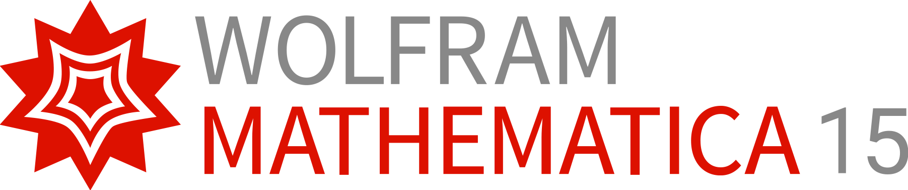

Energy Transmission Across Holographic Conformal Interfaces in General Dimensions
arXiv:2609.38318 [hep-th] · submitted 29 September 2026 · 9 + 20 pages
Igal Arav, Theodore Bertrand, Shira Chapman, Giuseppe Policastro, Sebastian Waeber
arxiv.org/abs/2609.38318 · PDF
About this deck. A workflow proposal prepared by Daniel Liezrowice (Engineering Software Lab) for the paper's authors: what the MantiQ Factor process would do with this specific paper. Independent of the authors; no work has been executed yet; paper facts cited from v1. Precedents: MantiQ Factor / REED, MantiQ / QPE, MantiQ / Solidity.
The production line the REED case study built: seven stages from a public research paper to formally verified, executable systems. This deck maps that same line onto your paper.
Reading the picture: the seven stages (input, conversion, understand, compute, verify, engineer, output) compress into the six-stage pipeline on slide 04, adapted to a theory paper. Image source: MantiQ Factor / REED case study, slide 1.
Energy scattering across a conformal interface, studied through AdSd-sliced domain walls: a compact research paper with dense, checkable mathematics.
For metrics ds² = dy² + a²(y) ds²(AdSd) asymptotic to empty AdSd+1, the transmission coefficient TL is a closed-form functional of the warp factor a(y) alone (Eq. 15), independent of the wave details.
Reproduces the known two-dimensional holographic results (Refs. 11, 12, 16) and extends them to arbitrary dimension. The d = 2 Janus case has a fully explicit form (Eq. 154).
KNOWN RESULTS = READY-MADE REGRESSION TARGETSTransmission is independent of the incidence angle, of the profile of the incident perturbation, and of the source used to create it. Examples: thin-brane models, Janus geometries (Eqs. 27 to 29).
SWEEPABLE IN A SIMULATORTransmission is bounded by central-charge-like quantities: lower and upper bounds controlled by CTL / CTR (Eq. 23), with the bound structure proved in Appendix B. Complete reflection is attainable in multi-brane models.
INEQUALITY · A NATURAL PROOF TARGETKey d = 2 check value (Eq. 154): TL = Ω(b) = √(b(2−b)) / (2 arctanh √(b/(2−b))), with T → 1 as b → 0 and T → 0 as b approaches the bound of the allowed range. Boundary: results are for the stated class, linearized perturbations; the Discussion itself asks how far they extend.
Six stages. Each produces a different evidence class, and no stage silently strengthens the one before it.
PDF + LaTeX source, SHA-256 manifest. The paper's claims are enumerated verbatim into a claim ledger.
PAPER / DERIVEDManual transcription of the metric ansatz, the TL definition, conventions (Fefferman-Graham, slicing, branches). Ambiguities become ledger entries, never silent repairs.
RECORDED ASSUMPTIONSSymbolically re-derive Eq. 15 for thin-brane and Janus warp factors, reproduce Eq. 154, verify limits, generate frozen regression vectors plus a named audit.
SYMBOLICALLY VALIDATEDKernel-checked theorems: the transmission bounds (Appendix B structure), the d = 2 Janus identity, the complete-reflection limit. The proof boundary is published.
FORMALLY PROVED (SCOPED)Compile the domain-wall wave dynamics into a quantum circuit (OpenQASM or a Classiq program), run it on a simulator, and overlay measured transmission on the closed form.
NUMERICALLY TESTEDClaim-status table, notebook, Lean files, vectors, QASM / Classiq circuit, simulator, reproduction guide. Public, downloadable, extensible by readers.
REPRODUCIBLEThe whole paper lives on the warp factor a(y) and the functional TL[a]. Closed forms, limits, and bounds around a single object are exactly what an executable oracle is for.
The d = 2 results (Refs. 11, 12, 16) and Eq. 154 are fixed targets. The REED pattern applies directly: freeze vectors, audit them, and never edit the oracle to fit an implementation.
Appendix B is an inequality over a stated class of warp factors, the kind of statement Lean 4 + Mathlib handles well when the scope is explicit.
The paper already separates what is proved, what is checked, and what is expected (Appendix D is labeled a consistency check, not a fix). MantiQ formalizes exactly that separation.
Boundary: this is the assessment for the workflow's first four stages. Stage-fit for the endpoint is addressed separately (slides 08 and 10).

Status language: each item ends as SYMBOLICALLY VALIDATED for the named families and cases only. A notebook checks named cases; it is not a universal theorem.
No sorry, no admit, no project axioms. Only Mathlib's logical foundation (propext, Classical.choice, Quot.sound), with an axiom audit published alongside the theorems, as in the REED and QPE runs.
The QPE case study proved exactly one resource identity and said so. The same honesty applies here: a bounded, correct proof set beats an implied but unreachable whole-paper formalization.
Boundary: Lean proves mathematics under definitions. It asserts nothing about any numerical solver, and the solver asserts nothing about Lean.
The domain-wall scattering problem is a wave equation with a position-dependent speed: exactly the class Hamiltonian simulation and discrete-time quantum walks handle. Discretize the linearized perturbation on a(y) into a unitary circuit.
Emit OpenQASM for stock simulators, or synthesize through Classiq; both are named target outputs of the MantiQ production line. The circuit is the executable artifact, not a diagram of one.
Run the circuit on a simulator, read the transmitted energy from measured amplitudes, and compare against two independent routes: the Wolfram oracle and the closed-form TL. Disagreement is preserved and diagnosed, never repaired away.
A browser lab sweeps d, family (thin brane, Janus, multi-brane), and parameters: watch the transmission curve move, watch the bounds tighten as CTL / CTR changes, and see the slight d-dependence directly.
Status language: simulator agreement is NUMERICALLY TESTED for the swept grid. No quantum speedup is claimed: the circuit is the checked, executable form of the model, not a hardware claim. And it is hardware-ready: if the research ever needs a real device, the same artifact is the input to cloud backends, not a rewrite.
| Paper claim | MantiQ evidence status | Artifact and boundary |
|---|---|---|
| Closed-form TL[a] (Eq. 15) | SYMBOLICALLY VALIDATED | Wolfram re-derivation for thin-brane and Janus families; exact values per named case. Not a theorem about all warp factors. |
| d = 2 reproduction (Eq. 154) | FORMALLY PROVED + TESTED | Lean certificate for the Janus identity plus numeric regression vectors. Scoped to the flat-potential d = 2 case. |
| Central-charge bounds (Eq. 23) | FORMALLY PROVED (SCOPED) | The Appendix B inequality structure, formalized for the stated class. Hypotheses travel with the theorem. |
| Universality: angle and profile independence | NUMERICALLY TESTED | Simulator sweeps over angles, profiles, and sources within the class. The paper's derivation remains PAPER / DERIVED. |
| Beyond the class: top-down models, beyond linearized order, quantum corrections | NOT ESTABLISHED (TODAY) | Open questions the Discussion itself raises. The simulator becomes the probe for future follow-ups rather than a claimed result. |
The contract: statuses apply to their stated scope and never combine into a blanket claim. Downstream stages can add evidence; they never silently strengthen an upstream claim.
Wolfram oracle for the closed forms, limits, and dimension scans. Claim and ambiguity ledgers for a conventions-heavy holography derivation. Independent cross-checks through a QASM / Classiq circuit artifact executed on a simulator.
Lean 4 verification must be scoped: bounds, certificates, and limits are realistic; formalizing the full linearized-gravity derivation is research-level work and stays a declared non-goal.
RTL, FPGA, and Solidity gates do not apply. The executable layer lands one level up, in the MantiQ production line's quantum targets: a QASM / Classiq circuit on a simulator, plus a public evidence package.
Summary: the pipeline applies end to end: normalize, compute, verify, then engineer the model as a QASM / Classiq circuit executed on a simulator, closing with the evidence package.
TL[a], the bounds, and the limit behavior re-derived by a separate symbolic engine, formalized where feasible, and tested numerically. Useful before follow-up work builds on the paper.
Notebook, Lean files, vectors, QASM / Classiq circuit, and simulator travel together with reproduction instructions, like the QPE evidence folder. Readers and referees can re-run rather than re-derive.
The Discussion asks how far universality extends: more general matter couplings, top-down solutions, beyond linearized order. The simulator is the instrument for those probes.
The claim-status table gives referees and readers an exact picture of what is proved, what is computed, and what is assumed, strengthening rather than inflating the paper's claims.
Note: nothing about the paper's results changes. What changes is how independently a reader can verify them, and how easily follow-up work can start from a checked baseline.
Run arXiv:2609.38318 through the QPE-shaped scope: manual transcription with an ambiguity ledger, a Wolfram notebook with a named audit and frozen vectors, scoped Lean theorems for the bounds and the d = 2 identity, an interactive scattering lab, a QASM / Classiq circuit executed on a simulator, and a public evidence page.
Normalize the claims and conventions; build the Wolfram oracle for Eqs. 15, 29, and 154; freeze the first vector set and audit.
Lean theorems for the bounds and the Janus certificate; publish the axiom audit and the proof boundary.
QASM / Classiq circuit artifact and simulator runs, three-way cross-model comparison, and the public evidence package with claim-status table.
Daniel Liezrowice · Engineering Software Lab · daniel.l@eswlab.com · eswlab.com
Boundary: independent of the paper's authors; prepared 14 October 2026 from arXiv:2609.38318 v1. Equation numbers cite v1. This deck proposes a workflow; it reports no executed verification. Case-study precedents: REED / FHE hardware, quantum phase estimation, Solidity escrow. Third-party names remain the property of their owners; no endorsement implied.